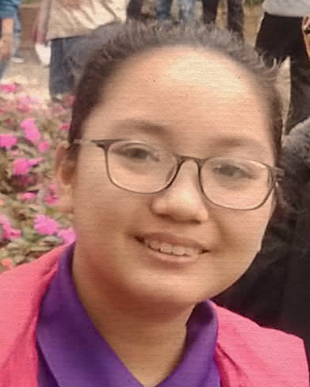

"Always keep trying even if you aren't good at it."
As of right now, I am currently 19 years old and one of the students in the class BSIT3A of MCC. Originally, I took interest with this course mainly because of my skill and talent for Visual Arts. Digital Art was one of my favorite hobbies I've picked up on, so I wondered if I could learn more with it. While I was a bit disappointed with the lack of involvement for Multimedia, I have taken quite an interest with Web Development due to my interest with indie websites and Game Development due to my interest with games, especially having some influence from some friends that are passionate in developing their own games. I don't specifically have any dreams as of right now but I do have personal goals. My goals in life was to be able to create my own personal indie website and a simple game of my liking. I simply want to create something that I would personally enjoy doing then continue to explore and experiment without getting myself feeling pressured to express myself.